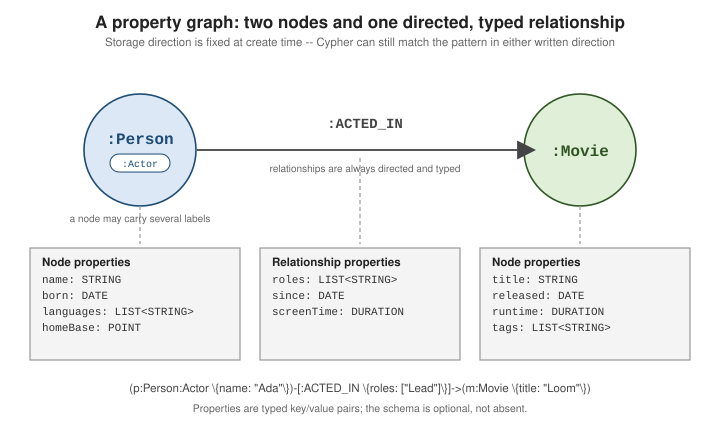

The property graph model
|
This content was generated with the assistance of AI and should be verified against the official documentation before being relied on in production. |
Everything in Neo4j is one of four primitives: a node, a relationship connecting two nodes, a label attached to a node, and a property attached to either a node or a relationship. There is no table, no row, and no foreign key — a relationship is a first-class, stored pointer, not a value joined at query time.

The same four primitives, and the rules that connect them, can be summarised as a small model of the model itself. Everything the database stores is an element with an identity and a set of properties; the differences between a node and a relationship are what each one may reference:
Three consequences follow directly. A relationship cannot exist without both endpoints, so deleting a node requires first deleting its relationships. A relationship has exactly one type, so a connection that is "an acting credit or a directing credit" is two relationships, not one with a choice of types. And any number of relationships, of the same or different types, may join the same pair of nodes, or start and end at the same node.
The examples on this page run against the movie dataset defined in the getting started page, plus a few temporary nodes that are deleted again.
Nodes and relationships
A node represents an entity; a relationship connects exactly two nodes (or a node to itself) and is always directed and always typed — every relationship has one direction and one relationship type fixed at creation time, and both are stored, not inferred.
// https://neo4j.com/docs/getting-started/data-modeling/
CREATE (p:Person:Actor {name: "Ada Lovelace", born: date("1815-12-10")})
CREATE (m:Movie {title: "Loom", released: date("2026-01-01")})
CREATE (p)-[:ACTED_IN {roles: ["Lead"], since: date("2026-01-01")}]->(m)Reading the new nodes back confirms that the relationship is attached to both:
MATCH (p:Person)-[r:ACTED_IN]->(m:Movie {title: "Loom"})
RETURN p.name AS actor, labels(p) AS labels, r.roles AS roles, r.since AS since;+---------------------------------------------------------------------+
| actor | labels | roles | since |
+---------------------------------------------------------------------+
| "Ada Lovelace" | ["Person", "Actor"] | ["Lead"] | 2026-01-01 |
+---------------------------------------------------------------------+Direction matters for how a relationship is stored and traversed — Neo4j keeps a dense, doubly-linked
list of relationships per node so that following -[:ACTED_IN]-> from p or <-[:ACTED_IN]- into m
are both O(1) per hop, unlike a foreign-key join. A Cypher pattern, however, can ignore direction by
omitting the arrow, matching the relationship in either stored direction:
// undirected pattern: matches the relationship regardless of which way it was created
MATCH (p:Person)-[:ACTED_IN]-(m:Movie)
WHERE p.name = "Ada Lovelace"
RETURN m.title;+---------+
| m.title |
+---------+
| "Loom" |
+---------+The same fact looked up against the arrow returns nothing, which is the usual cause of an empty result from a
query that "should" match: on the movie dataset, (m:Movie {title: "The Matrix"})-[:ACTED_IN]->() finds zero
relationships, while (m:Movie {title: "The Matrix"})<-[:ACTED_IN]-() finds the four cast members.
Rules enforced when a relationship is created
CREATE insists on exactly one relationship type and rejects anything else at parse time:
MATCH (a:Person {name: "Ada Lovelace"}), (m:Movie {title: "Loom"})
CREATE (a)-[:ACTED_IN|DIRECTED]->(m);42I14: syntax error or access rule violation - invalid number of relationship types. Exactly one relationship type must be specified for `CREATE`.The alternation | is fine in a MATCH pattern (-[:ACTED_IN|DIRECTED]-> matches either), but a created
relationship must have one definite type. Self-relationships are allowed — CREATE (a)-[:KNOWS]->(a) creates a
loop on a — and a second ACTED_IN between the same two nodes is a second, independent relationship with its
own properties, not an update of the first. CREATE never checks for an existing one; MERGE is the clause
that does (see Cypher fundamentals).
// Ada now has two ACTED_IN relationships to Loom: a lead and a cameo
MATCH (a:Person {name: "Ada Lovelace"}), (m:Movie {title: "Loom"})
CREATE (a)-[:ACTED_IN {roles: ["Cameo"]}]->(m);
MATCH (:Person {name: "Ada Lovelace"})-[r:ACTED_IN]->(:Movie {title: "Loom"})
RETURN r.roles AS roles ORDER BY roles;+-----------+
| roles |
+-----------+
| ["Cameo"] |
| ["Lead"] |
+-----------+Identity
Every node and relationship has an internal elementId, a string such as
4:b4163928-de5d-4a60-8a5f-11b62d0505fc:11 made of a prefix, the identifier of the database and the record id. It is stable while the
element exists, but a record id can be reused after a deletion, so it is a handle for the duration of a
conversation with the database, not a business key. The older integer id() function still works but is
deprecated for that reason; store your own identifier (a uuid, an isbn, an email) as a property and protect
it with a uniqueness constraint, as described in Indexes &
constraints.
Labels
A label groups nodes for indexing, constraints and pattern matching — roughly Neo4j’s analogue of a
table name, except a node can carry any number of labels at once. \(p:Person:Actor \{name: "Ada
Lovelace"\}) above creates one node with both labels; labels can also be added or removed from an
existing node without touching its properties or relationships:
MATCH (p:Person {name: "Ada Lovelace"})
SET p:Director
RETURN labels(p);+---------------------------------+
| labels(p) |
+---------------------------------+
| ["Person", "Actor", "Director"] |
+---------------------------------+REMOVE p:Director takes the label off again. Use labels for what kind of thing a node is and for the
partitions you will filter by constantly: :Person, :Movie, :Actor. Do not use them for values that change
often (:Active, :Pending) or that you would want to compare ("every node whose genre is X" is a property or a
:Genre node). Label changes are cheap, but each label is also a schema element that indexes, constraints and
the query planner key off, so a model with thousands of distinct labels is a sign that data has leaked into the
schema.
The names in play can be listed at any time, which is a quick way to orient yourself in an unfamiliar database:
CALL db.labels() YIELD label RETURN label ORDER BY label;
CALL db.relationshipTypes() YIELD relationshipType RETURN relationshipType ORDER BY relationshipType;+----------+
| label |
+----------+
| "Movie" |
| "Person" |
+----------+
+------------------+
| relationshipType |
+------------------+
| "ACTED_IN" |
| "DIRECTED" |
+------------------+Properties and their types
Both nodes and relationships carry properties — typed key/value pairs. A relationship’s properties
describe the connection itself (roles, since above), not either endpoint, which is why "who played
what role, and since when" belongs on the :ACTED_IN relationship rather than being duplicated onto
:Person or :Movie.
A property value is one of a fixed set of storable types, or a list of one of them:
| Type | Example literal | Notes |
|---|---|---|
|
|
Lists of booleans are allowed. |
|
|
64-bit signed. |
|
|
64-bit IEEE 754. |
|
|
Unicode text. |
|
|
Built with the functions of the same name; see below. |
|
|
Cartesian or WGS-84, 2D or 3D. |
|
|
Every element must be the same storable type, and |
NULL, MAP, nodes, relationships and paths are valid expression values but cannot be stored. Assigning
null to a property removes it, which is why a Neo4j node has no "empty" columns:
MATCH (p:Person {name: "Keanu Reeves"}) SET p.born = null RETURN keys(p) AS keys;+----------+
| keys |
+----------+
| ["name"] |
+----------+Absence is how Cypher models a missing value, so a test for it is p.nickname IS NULL; the same expression is
true for a property that was never set and one that was removed. valueType() reports the type of any
expression, which is a quick way to find out what a property really holds:
RETURN valueType(1) AS a, valueType("x") AS b, valueType([1, 2]) AS c,
valueType(date()) AS d, valueType(point({x: 1, y: 2})) AS e, valueType(3.5) AS f;+------------------------------------------------------------------------------------------------------------------------------------+
| a | b | c | d | e | f |
+------------------------------------------------------------------------------------------------------------------------------------+
| "INTEGER NOT NULL" | "STRING NOT NULL" | "LIST<INTEGER NOT NULL> NOT NULL" | "DATE NOT NULL" | "POINT NOT NULL" | "FLOAT NOT NULL" |
+------------------------------------------------------------------------------------------------------------------------------------+Types are per value, not per property key: nothing stops one Person from having born: 1964 and another
born: "1960", and the second then silently drops out of every numeric comparison. A property type constraint
(see Indexes & constraints) is the way to pin the type down once
the model settles.
Temporal types
Cypher has dedicated temporal types — DATE, TIME, LOCAL TIME, DATETIME, LOCAL DATETIME and
DURATION — constructed with functions of the same name and stored as native property values, not as
strings. The "local" types carry no time zone; the "zoned" ones (TIME and DATETIME) keep the offset they
were created with.
// https://neo4j.com/docs/cypher-manual/current/values-and-types/temporal/
RETURN date("2026-09-14") AS today,
datetime("2026-09-14T10:15:00Z") AS asOf,
duration({months: 2, days: 3}) AS runtimeGap;+----------------------------------------+
| today | asOf | gap |
+----------------------------------------+
| 2026-09-14 | 2026-09-14T10:15Z | P2M3D |
+----------------------------------------+Because they are real values, they support arithmetic, component access and comparison without parsing:
RETURN date("2026-09-14") + duration({months: 2, days: 3}) AS later,
date("2026-09-14").dayOfWeek AS dow;
MATCH (p:Person {name: "Ada Lovelace"})
RETURN p.born.year AS year, p.born.month AS month,
p.born + duration({years: 200}) AS bicentenary;+------------------+
| later | dow |
+------------------+
| 2026-11-17 | 1 |
+------------------+
+----------------------------+
| year | month | bicentenary |
+----------------------------+
| 1815 | 12 | 2015-12-10 |
+----------------------------+dayOfWeek is ISO numbered, so Monday is 1. A date range query such as WHERE m.releaseDate >= date("1998-01-01")
can use a range index, which is the main practical reason to store dates as temporal values instead of strings
or epoch integers. duration.between(a, b) and duration.inDays(a, b) measure the gap between two values.
The spatial Point type
POINT stores 2D or 3D coordinates, either geographic (WGS-84 latitude/longitude) or Cartesian, and
supports native distance calculation with point.distance(). For a geographic point the distance is in metres;
for a Cartesian one it is in the units of the coordinate system:
// https://neo4j.com/docs/cypher-manual/current/values-and-types/spatial/
MATCH (p:Person {name: "Keanu Reeves"})
SET p.homeBase = point({latitude: 34.0522, longitude: -118.2437})
RETURN p.homeBase,
round(point.distance(p.homeBase, point({latitude: 51.5074, longitude: -0.1278})) / 1000) AS kmToLondon;
RETURN point.distance(point({x: 0, y: 0}), point({x: 3, y: 4})) AS cartesianDistance;+---------------------------------------------------------+
| p.homeBase | kmToLondon |
+---------------------------------------------------------+
| point({srid:4326, x:-118.2437, y:34.0522}) | 8765.0 |
+---------------------------------------------------------+
+-------------------+
| cartesianDistance |
+-------------------+
| 5.0 |
+-------------------+The srid identifies the coordinate reference system (4326 for WGS-84 longitude and latitude, 7203 for 2D
Cartesian), and two points can only be compared when their srid matches. point.distance() and
point.withinBBox() are what a point index accelerates — see
Indexes & constraints.
LIST properties, and why MAP is not one
A property value can be a LIST of a single primitive type — languages and roles above are both
lists. MAP is a first-class Cypher value used for parameters, query results and map projections
(p \{.name, .born\}), but Neo4j does not store a map directly as a node or relationship property: a
property is a primitive or a homogeneous list of primitives, never a nested structure. Both rules are enforced
with an explicit error:
MATCH (p:Person {name: "Hugo Weaving"}) SET p.profile = {a: 1};
MATCH (p:Person {name: "Hugo Weaving"}) SET p.mixed = [1, "two"];22N01: data exception - invalid type. Expected the value Map{a -> Long(1)} to be of type BOOLEAN, STRING, INTEGER, FLOAT, DATE, LOCAL TIME, ZONED TIME, LOCAL DATETIME, ZONED DATETIME, DURATION or POINT, but was of type MAP NOT NULL.
22N39: data exception - unsupported property value type. Value String("two") cannot be stored in properties.A value that genuinely needs map shape is either flattened into scalar/list properties, or modeled as its own
node reached by another relationship if it needs independent identity and querying. A map is, however, exactly
what you want as a result: a map projection builds one from a node’s properties and any extra computed
entries. Aggregates such as collect() must be computed in a WITH first, because an aggregate cannot sit
inside a projection next to the ungrouped node:
MATCH (p:Person {name: "Hugo Weaving"})-[:ACTED_IN]->(m:Movie)
WITH p, collect(m.title) AS credits
RETURN p {.name, .born, credits} AS profile; // a MAP value, built at query time+---------------------------------------------------------------------------------------------------+
| profile |
+---------------------------------------------------------------------------------------------------+
| {name: "Hugo Weaving", credits: ["Cloud Atlas", "The Matrix Reloaded", "The Matrix"], born: 1960} |
+---------------------------------------------------------------------------------------------------+Writing RETURN p {.name, credits: collect(m.title)} directly fails with 42I18, "invalid reference to
implicitly grouped expressions": the projection reads properties of p while also aggregating, and Cypher does
not infer p as the grouping key. p {.*} projects every stored property.
A vector embedding is stored the same way as a list of floats, but is common enough, and carries enough of its own ANN indexing and query surface, to warrant its own page — see Vector search & GenAI and the reference Vector type doc.
Schema-optional, not schema-free
None of the above requires an upfront schema: a label can be attached to one node and never used again, and two nodes with the same label can carry entirely different property sets. Neo4j calls this schema-optional rather than schema-free, because constraints can still be layered on to enforce uniqueness, existence or property type once a shape stabilizes — see Indexes & constraints for how to add them without giving up the freedom to evolve the model incrementally.
Contrasting with the document model
A document store keeps one JSON-like document per entity and models relationships by embedding or by an application-level key lookup — see MongoDB Schema Design and Couchbase documents, keys & metadata. The property graph model inverts that: relationships are stored, first-class, independently queryable records rather than embedded sub-structures or resolved keys, which is what makes multi-hop traversals (friend-of-a-friend, shortest path, variable-length pattern matching) a graph strength that a document or relational join has to reconstruct at query time.